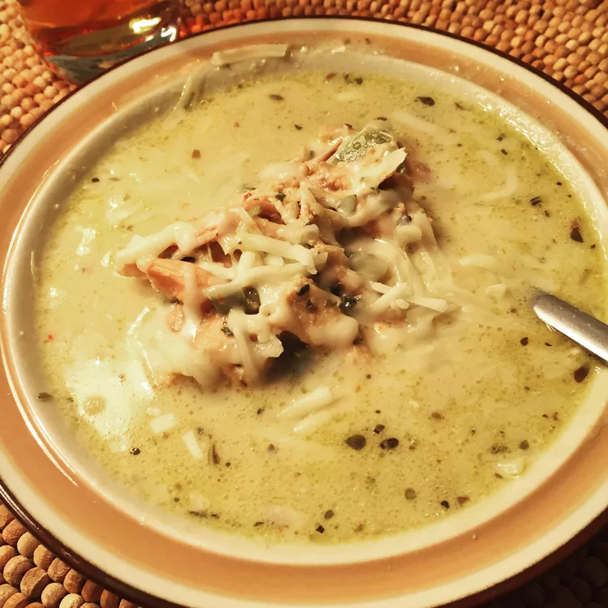

Chicken Chili

Chicken Chili description
This is a delicious and easy-to-make chicken chili recipe that's perfect for a quick weeknight dinner. i picked it becuse it look really good.
Ingredients:
- 16 ounce jar green salsa
- 16 ounce can diced tomatoes
- 15 ounce can kidney beans
- 14 ounces of chicken broth
- 14 ounces corn
- 1 onion
- half table spoon of oregano
- salt and pepper
- 3 sinkls of bone less chicken breast
steps
- Place all ingredients in a slow cooker.
- Cook on low for 6-8 hours until chicken shreds
- remove chicken to cutting board and shred completely keep chlli cooking.
Creamy White Chicken Chili

Creamy White Chili description
Ingredients:
- 1 tablespoon olive oil
- 1 pound skinless, boneless chicken breasts, cut into ½-inch cubes
- 1 onion, chopped
- 2 cloves garlic chopped
- 2 cloves garlic, chopped
- 2 (15.5 ounce) cans great Northern beans, rinsed and drained
- 1 (14.5 ounce) can chicken broth
- 2 (4 ounce) cans chopped green chiles
- 1 teaspoon salt
- 1 teaspoon ground cumin
- 1 teaspoon dried oregano
- 1/2 teaspoon black pepper
- 1/4 teaspoon cayenne pepper
- 1/2 cup sour cream
- 1/2 cup heavy cream
steps
- gather ingredients
- Heat olive oil in a large saucepan over medium heat. Add chicken, onion, and garlic; cook and stir until chicken is no longer pink in centers and the juices run clear, 10 to 15 minutes.
- Stir in beans, chicken broth, green chiles, salt, cumin, oregano, black pepper, and cayenne pepper; bring to a boil. Reduce heat; simmer until flavors have blended, about 30 minutes.
- Off heat, stir in sour cream and heavy cream until incorporated.
Creamy White Chicken Chili with Salsa Verde

Creamy White Chicken Chili with Salsa Verde description
Ingredients:
- 1 tablespoon olive oil
- 1 pound skinless, boneless chicken breasts, cut into ½-inch cubes
- 1 onion, chopped
- 2 cloves garlic, chopped
- 1 (8 ounce) package cream cheese, softened
- ½ cup half-and-half
- 1 tablespoon olive oil
- 2 medium green bell peppers, chopped
- 2 medium jalapeño peppers, diced
- 3 cloves garlic, chopped
- 1 (2 pound) rotisserie chicken, skinned, boned, meat pulled into large chunks and shredded
- 1 tablespoon dried minced shallots
- ¼ teaspoon cayenne pepper
- salt and ground black pepper to taste
- 8 cups chicken stock
- 1 (16 ounce) jar salsa verde
- 1 tablespoon ground cumin
- 2 teaspoons dried oregano
steps
- Place cream cheese in a microwave-safe bowl. Microwave on high power until soft, about 20 seconds. Stir in half-and-half until combined; set aside.
- Heat oil in a large skillet over medium heat. Add bell peppers, jalapeños, and garlic; sauté until soft, 5 to 7 minutes. Stir in chicken, dried shallots, cayenne pepper, salt, and black pepper. Add cream cheese mixture, chicken stock, salsa, cumin, and oregano; bring to a boil.
- Reduce heat; simmer for 1 to 2 hours.